项目管理
功能描述：支持管理机构中多个项目，可实际合理分配项目和项目参与人员。
界面展示：

【说明】
新建分类：新建目录分类
查询：根据条件查询项目
清空：清空查询条件及查询数据
新增项目：新建项目
明细：查看项目明细
编辑：编辑项目
删除：删除项目
操作指导：
【新建分类】
操作：点击新建分类，按需求自定义编写名称、标识键、编码、序号、描述，点击保存。
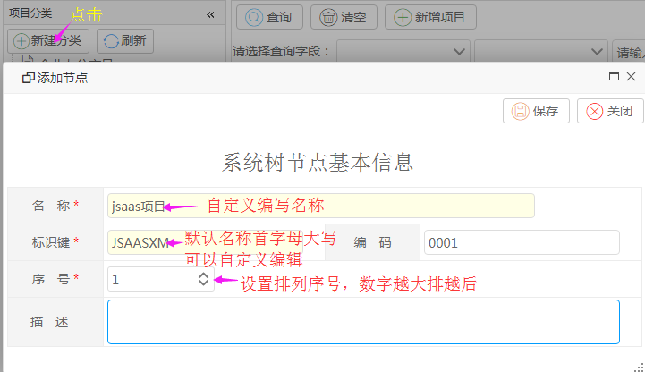
【查询】
操作：选择查询字段、查询方式，填写查询条件，点击查询。
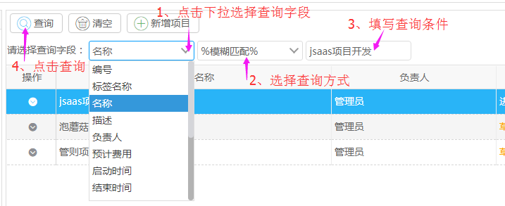
【新增项目】
操作：点击新增项目，按需求编写名称、标签名称、编号、预计费用、项目描述，选择负责人、类型，点击保存。
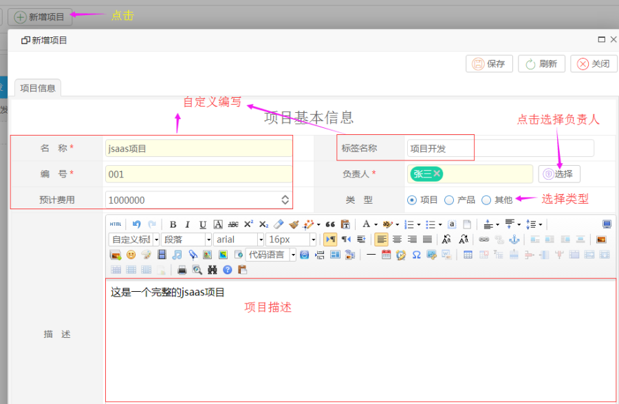
【选择负责人】
操作：点击 进入人员选择界面。选择人员步骤如下：
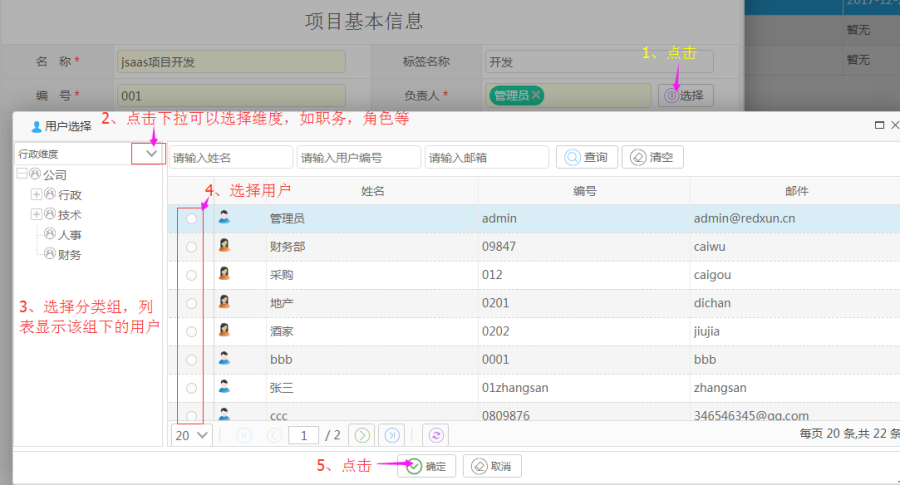
【明细】
操作：点击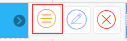 进入项目明细界面。
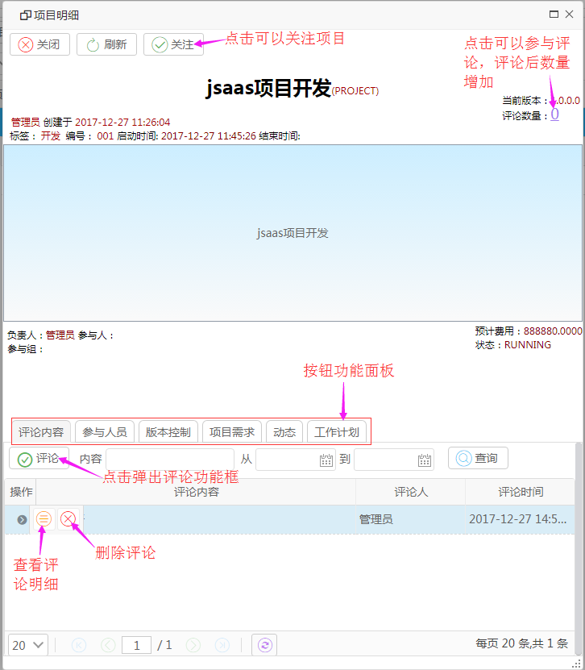
【评论明细】
操作：点击 进入评论明细界面。
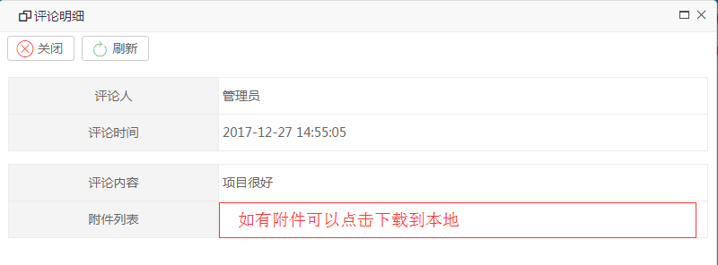
【参与人员】
项目的参与人员管理,包括参与人员和参与组。
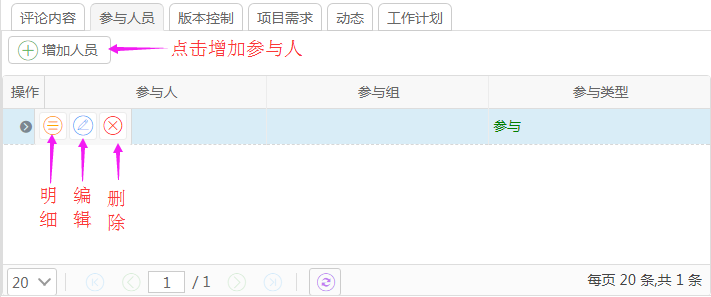
【增加人员】
操作：点击增加人员进入人员选择界面，选择参与人或参与组，点击保存。
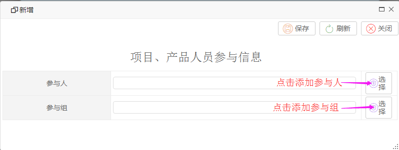
【版本控制】
对项目的版本进行管理。
页面中一开始只有一个版本,即1.0.0.0,而且是草稿状态的版本。
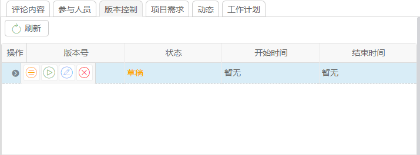
点击 【启动】，版本状态变为“进行中”，按钮会变成 【发布】。
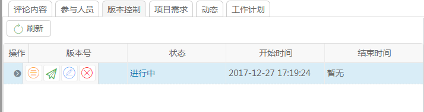
再点击【发布】则发布此版本(状态变成“发布”)，操作只有【明细】按钮。在项目中没有“草稿”状态的版本时,会出现[起草版本]按钮可以点击[起草版本]。
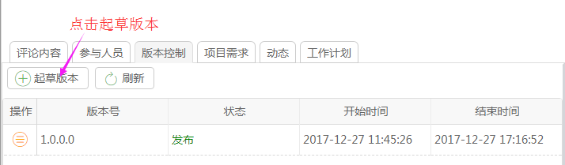
【起草版本】
操作：自定义填写版本号，选择状态，点击保存。
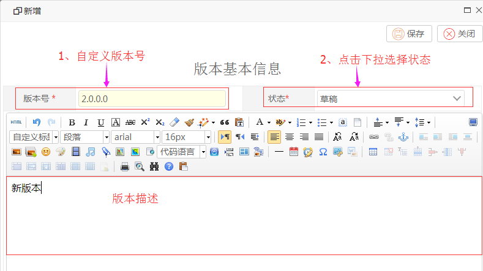
【项目需求】
管理项目的需求。
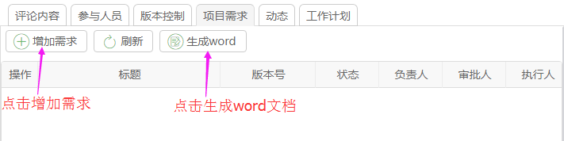
【增加需求】
如果项目的版本中没有未发布的版本,点击[增加需求]按钮将弹出警告提示缺少未发布的版本,并且不起作用。
则需要返回版本控制面板新建一个未发布版本。
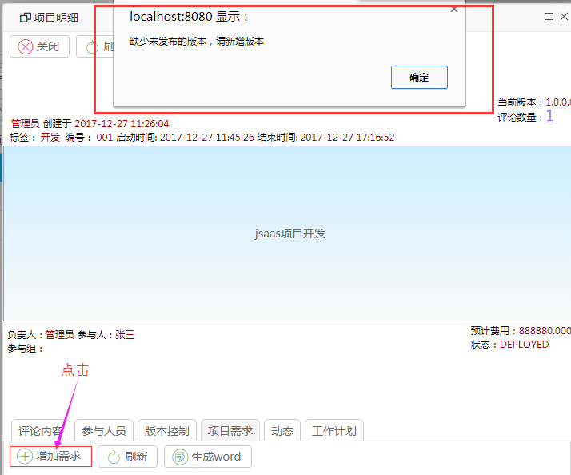
若已经有发布的版本。
操作：点击【增加需求】，编写基本信息、需求描述，选择相应人员，按需求保存草稿或提交保存。
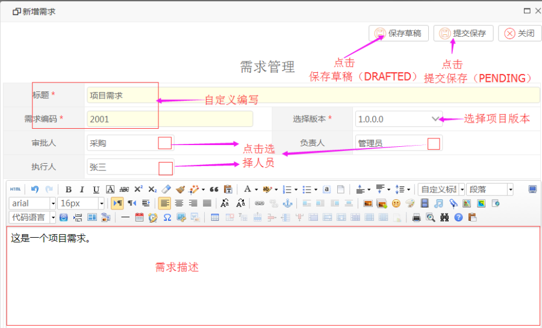
【子需求】
页面中,相关操作中值得注意的是子需求,一个需求可以切分成几个小的需求,于是有了子需求这个概念,如图所示:
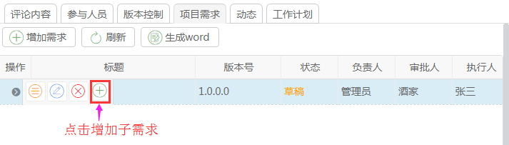
【需求明细】页面,有[评论内容]附加栏目,跟[项目明细]中的[评论内容]功能一样。
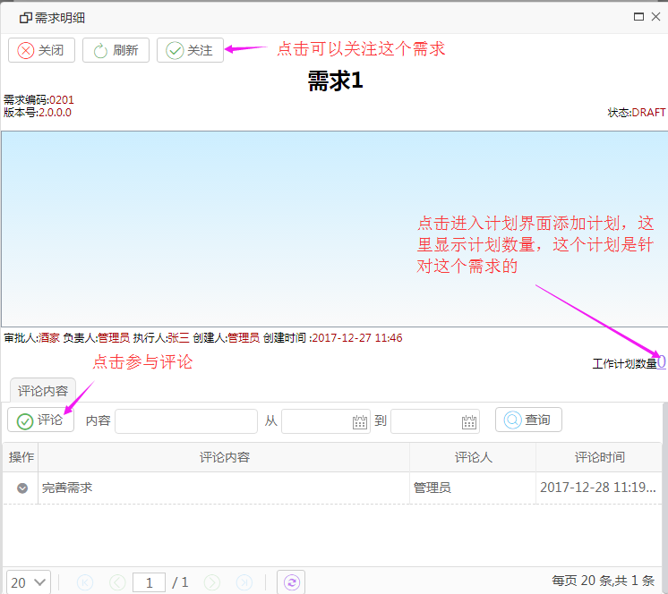
【需求计划】功能跟[项目明细]中的[项目需求一样],区别是[需求计划]中是针对需求提出的计划。
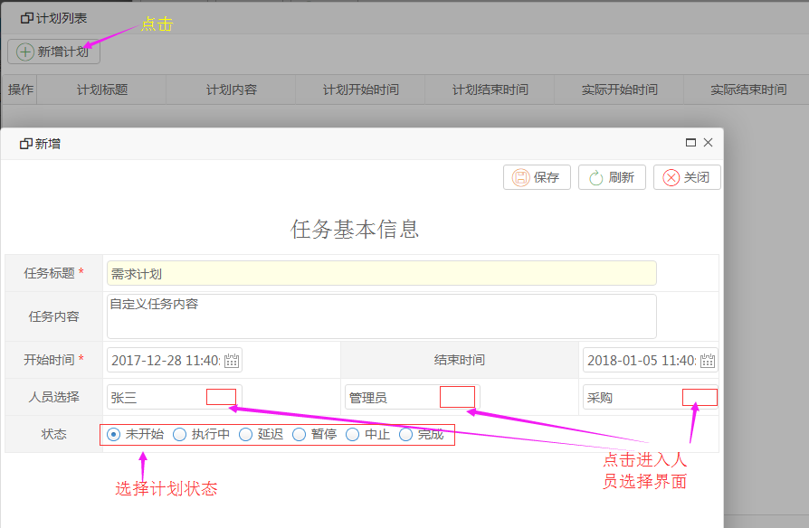
【动态】
项目所有相关的动态记录,包括对项目的创建,修改,删除,以及对项目的人员,需求, 版本,评论,计划的创建修改删除都会有相应的记录。
界面展示：
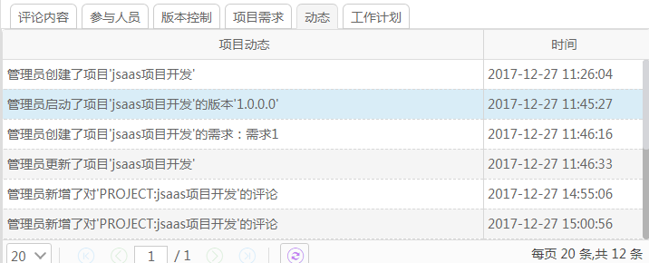
【工作计划】
对于此项目的计划。
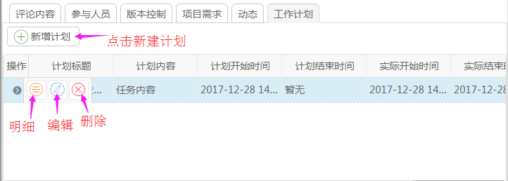
【新建计划】
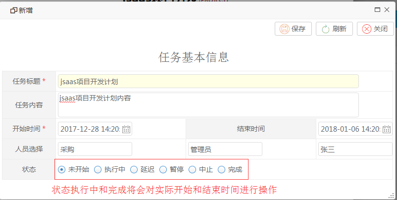
【计划明细】
计划明细中右下角的紫色数字可以点击打开计划所对应的工作日志。
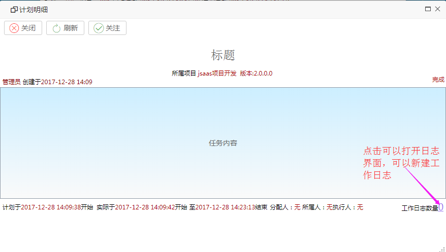
【工作日志】
操作：填写信息，按需求保存日志状态。（保存草稿状态为DRAFTED,提交保存状态为PENDING）。
开始时间和结束时间可以计算耗时并保存到数据库中。

【日志明细】
点击 进入日志明细界面。
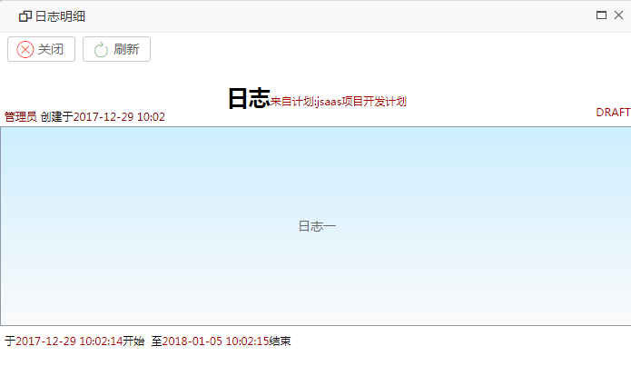